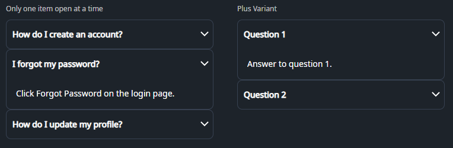

DaisyAccordion is an ItemsControl for stacked, single-open sections built from DaisyAccordionItem. It offers two indicator variants (arrow or plus) and enforces one expanded item at a time through the ExpandedIndex property. Use it to organize FAQ-style content or any list of collapsible panels where only one section should stay open.
| Variant | Description |
|---|---|
| Arrow (default) | Chevron on the right that flips 180° when expanded. Matches DaisyCollapse arrow styling for familiar disclosure cues. |
| Plus | Plus icon that rotates into an “×” when expanded, giving a bold open/close affordance. |
| Property | Description |
|---|---|
ExpandedIndex (int) |
Index of the currently open item (0-based). Set to -1 to start with everything collapsed. Updated automatically when a user opens an item; opening one item closes the others. |
DaisyAccordionItem.IsExpanded |
Bound to the header toggle. Setting an item to True (in XAML or code) will update ExpandedIndex and collapse siblings. |
Variant |
Set on the accordion to cascade the indicator style to all items; you can override per item if needed. |
DaisyAccordion expects DaisyAccordionItem children with a header and body content:
Header and is rendered as a clickable toggle.IsExpanded=True and inherits the item padding.<controls:DaisyAccordion>
<controls:DaisyAccordionItem Header="Section title">
<!-- Body content here -->
</controls:DaisyAccordionItem>
</controls:DaisyAccordion><!-- Basic accordion, first item open -->
<controls:DaisyAccordion ExpandedIndex="0">
<controls:DaisyAccordionItem Header="Overview">
<TextBlock Text="High-level summary of the feature." TextWrapping="Wrap" />
</controls:DaisyAccordionItem>
<controls:DaisyAccordionItem Header="Details">
<TextBlock Text="Deeper explanation with supporting info." TextWrapping="Wrap" />
</controls:DaisyAccordionItem>
</controls:DaisyAccordion>
<!-- Plus variant with FAQ-style content -->
<controls:DaisyAccordion Variant="Plus" ExpandedIndex="0">
<controls:DaisyAccordionItem Header="How do I reset my password?">
<TextBlock Text="Use the Forgot Password link and follow the email instructions." TextWrapping="Wrap" />
</controls:DaisyAccordionItem>
<controls:DaisyAccordionItem Header="Can I change my plan later?">
<TextBlock Text="Yes, upgrades are immediate; downgrades apply on the next cycle." TextWrapping="Wrap" />
</controls:DaisyAccordionItem>
</controls:DaisyAccordion>
<!-- Start fully collapsed -->
<controls:DaisyAccordion ExpandedIndex="-1">
<controls:DaisyAccordionItem Header="Shipping">
<TextBlock Text="Ships within 3–5 business days." />
</controls:DaisyAccordionItem>
<controls:DaisyAccordionItem Header="Returns">
<TextBlock Text="30-day returns with prepaid label." />
</controls:DaisyAccordionItem>
</controls:DaisyAccordion>
<!-- Rich body content -->
<controls:DaisyAccordion ExpandedIndex="1">
<controls:DaisyAccordionItem Header="Profile">
<StackPanel Spacing="8">
<TextBlock Text="Update your display name and bio." />
<controls:DaisyButton Content="Edit profile" Variant="Primary" />
</StackPanel>
</controls:DaisyAccordionItem>
<controls:DaisyAccordionItem Header="Notifications">
<StackPanel Spacing="8">
<TextBlock Text="Choose which alerts you receive." />
<controls:DaisyToggle Content="Email alerts" IsChecked="True" />
<controls:DaisyToggle Content="Push notifications" />
</StackPanel>
</controls:DaisyAccordionItem>
</controls:DaisyAccordion>ExpandedIndex="-1" when you want the accordion to load collapsed and let users expand what they need.